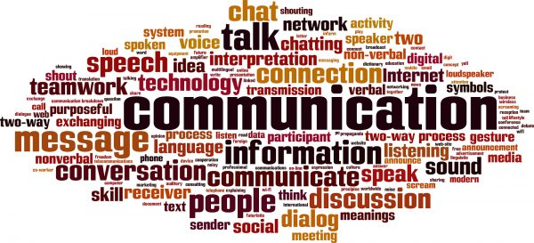
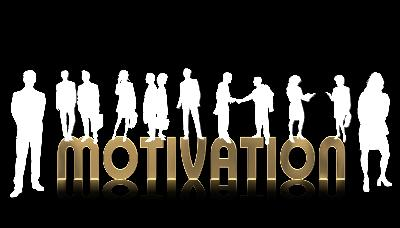

<!DOCTYPE html>
<HTML><TITTLE> </TITTLE></HTML> 
<HEAD>

<BODY>
<HEADER>
<a href="index.html">
 
</a>
</HEADER>
<HR>
<NAV>
<TABLE CELLSPACING="6"  CELLPADDING="6">
<TR>
<TD> <a href="../index.html"> HOME </TD>
<TD> <a href="articles.html"> ARTICLES </TD>
<TD> <a href="../habits.html"> HABITS </TD>
<TD> <a href="../skills.html"> SKILLS </TD>
<TD> <a href="../quotes.html"> QUOTES </TD>
<TD> <a href="../books.html"> BOOKS </TD>
</TR>
</TABLE>
</NAV>


<HR>
<skills>
<HEADER><H2>Communication</H2></HEADER>
<p>Communication is simply the act of transferring information from one place, person or group to another.
Every communication involves (at least) one sender, a message and a recipient.
 This may sound simple, but communication is actually a very complex subject.</p>

<center></center>

<p>A communication therefore has three parts: the sender, the message, and the recipient.For example, if employees 
inquire into the validity of a rumor that the company will be shutting down for an extra day during the winter holidays,
 the best response is for management to distribute accurate information immediately. </p>

<p><u><b>Role of Communication in Employee Motivation</b></u>...</p>

Employee motivation is critical to maintaining productivity. There are several factors that influence motivation, including pay, 
career opportunities and positive relationships with co-workers. Business owners and managers also need to understand the role of
 communication in employee motivation, as it can sometimes be the most basic communication errors that lead to employee dissatisfaction. 
Facilitating effective communication can help improve employee motivation in several ways.</p>

<p><u><b>Relationships</b></u>....</p>

<p>A workplace operates on the effective relationships built between employees, managers, departments and all levels of the company.
 Clear and honest communication helps to encourage and strengthen those relationships, which can assist employees in reaching maximum productivity.</p>

<center></center>

<p>For example, company managers can maintain a productive relationship with staff members by holding regular departmental meetings and sponsoring employee
 career development programs where management personnel monitor and assist in employees' progress.
 Maintaining strong workplace relationships helps employees achieve high levels of productivity and supports staff motivation.</p>

<p><u><b>Improvement</b></u>....</p>
<p>Skill set training programs with managers is the way in which most employees receive their career development assistance. 
If managers are not monitoring employee performance and developing training programs to improve productivity, then the skill sets of the employees begin to suffer.
 Communication between the employee and manager, as well as the employee and human resources,
 is critical in developing training programs that improve the employee's job skills and motivate her to succeed.</p>


</TR>
</TD>
</TABLE>

</skills>

<head>
<tittle>  </tittle>
<style>  


<head>
<tittle>  </tittle>
<style>  
/*csss goes here*/

a{
text-decoration:none;
display:inline-block;
padding:8px 16px;
}

a:hover{
background-color:#ddd;
color:black;
}

.Back
background-color:#f1f1f1;
color:black;
border-radius:5px;
}


</style>

<body>
<center>
<form>
    <input type="button" value="Go back!" onclick="history.back()">
</form>


</center>
</body>


</head>
</html>

<HR>
<FOOTER>
<a href="https://www.youtube.com/results?search_query=BEST+motivation+">
</a><br/>
 Motivation For Life.LOVE 2022
</FOOTER>

<Style>
body
{
 background="pic.jpg">
url('img_pic.jpg');
}
</style>


</HEAD>
</BODY>